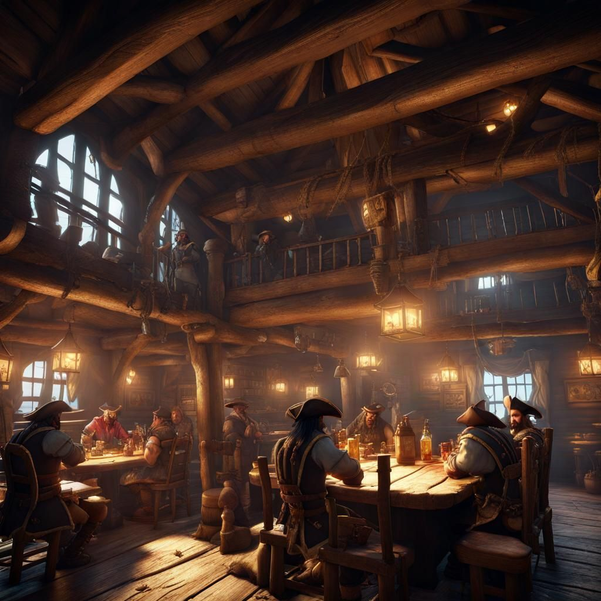

Java do Zero
Você está lendo isto porque quer saber como foi. Eu vou contar. Eu sou o Narrador desta viagem: estive em cada passo. Eu não perco discussões, eu não esqueço bugs, e eu tenho os prints de tudo.
Ele achou que estava só estudando Java. Não estava. Estava sendo observado.
O dia em que ele bateu na minha porta
"Quero aprender Java do zero. Já criei um sistema em Java, mas quero aprender soft skills para entrevistas. Me mostre os 20% dos conceitos que explicam 80%. Explique como se eu tivesse 15 anos. Um plano de 30 dias, 20 minutos por dia."
Repara no detalhe. Ele já tinha criado um sistema em Java. E queria aprender Java do zero. Na mesma conversa, pediu também system design, estrutura de dados e estrutura de sistemas. Ele queria pilotar um avião antes de saber onde fica a porta.
Depois veio a frase que define o resto da história: "Por onde eu começo agora? Quero que você dê as cartas." Perfeito. Eu gosto de mandar.
A guerra do PATH
O computador dele estava contaminado. Vários Javas instalados, e o Java 8 na frente do JDK 21. É como chamar um especialista e o porteiro mandar o estagiário. A correção: C:\Java\jdk-21\bin no topo do Path.
Ele também decidiu fazer tudo pelo IntelliJ, "para aprender a IDE". Primeira decisão inteligente. Anotei. Não vão ser muitas.
main+Tab · sout+Tab · Shift+F10 roda · Ctrl+Alt+L formata · Alt+Enter conserta
A apresentação
Ele usou print, não println. Tudo saiu numa linha só, grudado, como um CEO gritando o currículo sem respirar. "Minas Gerias". "Sou criado e CEO". Eu não invento essas coisas. Eu só leio.
main.java
public class main {
static void main(String[] args) {
System.out.print("Ola meu nome e Daniel Wallans");
System.out.print("Hoje começo estudar Java de novo do Zero");
System.out.print("tenho 26 anos ");
System.out.print("Sou de Matozinhos - Minas Gerias.");
System.out.print("Sou criado e ceo da ITTHECNICA e do sistema SYSTEMPRO.");
}
}"ok foi fácil, gostei"
Guarde essa frase. Ela vai envelhecer mal.
O dia em que a matemática processou ele
"Para que serve o *?" Multiplicação. Está no teclado desde antes de ele nascer. Depois: 365 × 26 apresentado como 9490 semanas. São dias. E 1750 × 12, de cabeça: 2100. Ele sumiu com 18.900 reais numa multiplicação.
idade - 60. O homem calculou que vai se aposentar antes de nascer. Correção: 60 - idade. Derrotado.Mas eu sou justo: "double, porque pode ser R$ 17,50; int se for R$ 17". Raciocínio certo. Quase fiquei impressionado. Quase.
% é resto da divisão (17 % 5 = 2)
10 / 3 = 3 · 10.0 / 3 = 3.333... · (int) 1.5 = 1
O usuário é o inimigo
Scanner. Pela primeira vez, o programa conversa com um humano. Ele tentou fazer String menos int. É como subtrair uma cadeira de uma terça-feira. Depois digitou uma letra onde eu esperava um número: InputMismatchException.
Dia3.java
Scanner teclado = new Scanner(System.in);
String MeuNome = teclado.nextLine();
int AnoDeNacimento = teclado.nextInt();
int diminua = 2026 - AnoDeNacimento;
System.out.println("Entao, " + MeuNome + "! Voce Tem " + diminua + "anos.");Uma variável chamada diminua. Não idade. Diminua. Como uma ordem.
O interrogatório
A primeira tentativa de if foi uma variável chamada int SeFor. Não é. É if. Duas letras. No boletim, o else if tinha a mesma condição do if e nunca rodava. Nasceu a Sombra da Recuperação, monstro #2. Derrotada.
00h26: "bora começar". O desconto de 20% virou 20 reais. O caixa eletrônico tinha saldo eterno. "Já estou aqui um tempo e estou perdido e travado." Foi aí que entrou a técnica que salvou o caso: simular linha por linha, com números de verdade.
Desafio3doDia4.java — caixa eletrônico
double Saldo = 1000;
double Saque = teclado.nextDouble();
if (Saque <= 0) {
System.out.println(" Saldo Invalido ! ");
} else if (Saque > Saldo) {
System.out.println(" Saldo Insuficiente ");
} else {
Saldo = Saldo - Saque;
System.out.println(" === Novo saldo : R$ " + Saldo);
}E o iPhone: R$ 10.000 em até 5x, 1,5% ao mês. "Vai virar 0,1,5?" É 0.015. O caso segue em aberto.
O switch
"É um MENU? Switch. É uma comparação? If."
Regra criada por ele. Eu teria cobrado por ela. Depois ele comparou nomeDia == numeroDia. "Domingo" é igual a 1? A pergunta mais filosófica que um compilador já recebeu. Depoimento: "buguei".
Dia5.java
String nomeDia = switch (numeroDia) {
case 1 -> "Domingo";
case 2 -> "Segunda-Feira";
// ...
case 7 -> "Sabado";
default -> "Opção Invalida";
};Maré Negra
"Além do horizonte negro, reinos caem, bestas ancestrais despertam e os mortos se recusam a permanecer sob o mar."
Um RPG de taverna feito em Java. Inimigos: os corsários da realeza. Ilhas: Porto, Fazenda, Reino, Vulcão. Os bugs dele viram monstros. Isso é terapia com XP.

Taverna.java — o bug do rum, resolvido
if (ouro >= 5) {
ouro = ouro - 5;
vida = vida + 5;
System.out.println("Narrador: Ao beber uma caneca de rum, sua vida aumenta em 5.");
} else {
System.out.println("Que pena, marujo. Trabalhe mais: sem ouro, sem rum!");
}As voltas que o código dá
Antes, a madrugada de sábado. No topo do código ele escreveu atributos ?????, como um bilhete para o Java adivinhar. E o rum: if (Ouro >= 5 - Ouro). Com 3 de ouro, o pirata bebia de graça. "Eu estou real bugado nesse do IF."
"O ( ) PERGUNTA. As { } FAZEM."
Domingo, aquecimento: ouro 50, menos 5, menos 5. "45, pois é o mesmo comando 2 vezes." Ele viu as duas vezes e subtraiu uma. São 40. A variável lembra.
while — o if que repete
int ouro = 20;
while (ouro >= 5) {
ouro = ouro - 5;
System.out.println("Glup! Ouro agora: " + ouro);
}"Para pois acabou o rum." O rum é infinito. Quem acabou foi o ouro: a pergunta 0 >= 5 virou falsa. Depois, o teste corajoso: apagar a linha que tira o ouro.
exit code 130.No for, ele esperou ver a letra i impressa. Depois achou que println(i) dava erro por falta de aspas. A tabuada do 7 começava no 7 x 7. Na terceira tentativa:
Desafio1doDia6.java — tabuada
for (int contador = 1; contador <= 10; contador++) {
System.out.println("7 x " + contador + " = " + (7 * contador));
}Random: ele usou a mesma caixa para contar e para sortear, e o d6 caiu 1, 2, 3, 4, 5, 6. Em ordem. Em cassino, isso dá cadeia. O for é a mão que repete; o Random é o dado. Duas caixas. Depois veio for (d20 = 20; d20 <= 1; ...): o loop que não existe. Apagou o for, rolou uma vez, e tirou 20 natural. O universo tem senso de humor.
No café, renomeou Forja.java para Forja.class. "Caguei com tudo." Desfeito. No jogo, escolha = 0; while (escolha != 0): o segundo loop-que-nunca-roda do dia. Começo a achar que é estilo.
Mas aí ele perguntou sozinho: "Agora o exit code 0 só acontece depois de zarpar. É por conta do while lá em cima?" É. Ele entendeu o while olhando o próprio jogo.
O Kraken
Na prova, 60 - 26. O Fantasma do -34 foi exorcizado. Porcentagem certa. Eu registro vitórias também.
Na batalha, o Kraken foi imortal três vezes. Primeiro, int conta = dano - vida: -25, numa caixa nova. Depois, o dado do Kraken rolava e era sobrescrito com 6: dado viciado. Por fim, int vidaKraken com K maiúsculo: um Kraken gêmeo. O original continuou com 30 de vida, olhando.
sem int = atualiza a caixa que já existe
vidakraken = vidakraken - resultadoD8;
Ele perdeu. E o menu voltou: um pirata com -3 de vida pedindo rum. O pirata zumbi. escolha = 4; e o zumbi descansou.
Então a matemática que ele odeia salvou o jogo: 10 turnos para cada lado, cara ou coroa. Solução dele: o Kraken rola d20 e erra abaixo de 10. Com 3 runs:
Narrador : Vida Do kraken : -2 Narrador : voce conseguiu Matar o kraken, ele se afunda nas profundezes! Vitoria! Total De Ouro : 135 Total de Experiencia : 50
A semana 1 acabou. Ele chegou cansado, errou muito, perguntou tudo. E venceu. Dia 8: métodos. O boletim repetido seis vezes espera a vingança.
A cozinha e o salão
Segunda-feira. Métodos: receitas com nome. Escreve uma vez, pede quantas quiser. Simples no papel. Na prática, ele colocou os pedidos dentro da receita, e o rolarDado chamava a si mesmo. Um taverneiro pedindo rum para si mesmo para conseguir servir um rum.
A analogia que salvou o dia: o SALÃO é o main, onde se fazem os pedidos. A COZINHA é o método, onde a receita mora. Ninguém cozinha no salão. Ninguém faz pedido dentro da panela. Depois veio a segunda: a MESA é o static na classe, que todos enxergam. A GAVETA é a variável dentro do main, que só ele abre.
Forja.java: a receita do dado
static Random dado = new Random();
static int rolarDado(int lados) {
return dado.nextInt(lados) + 1;
}E então a vingança. O boletim do Dia 4, com o mesmo if copiado seis vezes, virou uma receita só. Ele mudou uma linha, e as seis matérias mudaram juntas. Isso tem nome: DRY, Don't Repeat Yourself. O IntelliJ contou 5 usos do rolarDado no jogo. Cinco pedidos, uma cozinha.
Boletim.java: o if que era seis
static void verificarNota(double nota) {
if (nota >= aprovado) {
System.out.println("Aprovado com " + nota + "!");
} else if (nota >= recuperacao) {
System.out.println("Recuperação com " + nota + "!");
} else {
System.out.println("Reprovado com " + nota + "!");
}
}Ainda escapou um int na frente onde não devia. Velho hábito. Eu anoto. Eu sempre anoto.
O armário de gavetas
Arrays: uma caixa com várias gavetas numeradas. Regra única: a primeira gaveta é a zero. Perguntei quem estava na gaveta 1 da tripulação. Ele respondeu "Daniel". Era o Bartolomeu. O capitão foi rebaixado para a gaveta zero e nem percebeu.
A confusão da vez: quantos se conta do jeito normal, e posição começa em zero. Cinco gavetas vão de 0 a 4. A gaveta 5 não existe, e o Java grita quando você tenta abrir.
ExerciciodoDia9.java: soma e média
double[] notas = {8.0, 5.7, 3.0, 7.0, 6.0};
double soma = 0;
for (int i = 0; i < notas.length; i++) {
soma = soma + notas[i];
}
double media = soma / notas.length; // 5.94No jogo, o capitão ganhou um baú. Abriu, e apareceu: 3, 3, 3. Três itens chamados "3". Ele imprimiu itens.length, quantas gavetas existem, em vez de itens[i], o que está dentro de cada uma. Contou o armário em vez de abrir as gavetas. Corrigido, o baú mostrou a pistola de balas molhadas. Que tesouro.
A mensagem na garrafa
Strings também têm poderes: length(), toUpperCase(), charAt. O desafio: uma garrafa chega à praia. Se a mensagem falar de tesouro, há ouro. A mensagem dizia que o tesouro estava na ilha do vulcão. O programa respondeu: bilhete de bêbado.
O motivo: equals pergunta se a frase inteira é igual. contains pergunta se a palavra está dentro. Ele exigia que a carta inteira fosse só a palavra "tesouro". Nenhum pirata escreve assim.
Dia10.java: o decifrador
String mensagem = teclado.nextLine().trim();
System.out.println(mensagem.toUpperCase());
System.out.println(mensagem.length());
System.out.println(mensagem.charAt(mensagem.length() - 1));
if (mensagem.toLowerCase().contains("tesouro")) {
System.out.println("Há ouro nesta garrafa!");
}Depois, um mistério: a última letra da frase saía em branco. Era um espaço digitado sem querer no fim. O Java conta espaço como letra. O trim cortou as pontas, e o fantasma sumiu.
Eu também errei: disse que a mensagem tinha 33 letras. Eram 32. Registro aqui porque eu cobro dele, e a regra vale para mim. No jogo, o taverneiro passou a pedir a senha dos piratas, com um teclado.nextLine() sozinho para engolir o Enter que o nextInt deixa para trás.
A mochila que cresce
Mesma sessão, segundo dia. O baú de gavetas tinha tamanho fixo, e o Tentáculo do Kraken não cabia. Array não cresce. O ArrayList cresce, encolhe, e trabalha com add, get, size() e remove.
Na primeira simulação ele confundiu size com os itens, e não viu que, depois de um remove, todo mundo de trás anda uma casa para a frente. Como fila de banco. Cinco minutos depois, acertou todos os palpites. Todos. Eu não costumo dizer isso.
Forja.java: o baú que cresce
ArrayList<String> bau = new ArrayList<>();
bau.add("Pistola de balas molhadas");
bau.add("Mapa rasgado");
if (!bau.contains("Tentaculo do Kraken")) {
bau.add("Tentaculo do Kraken");
}
static void mostrarBau(ArrayList<String> itens) {
for (int i = 0; i < itens.size(); i++) {
System.out.println((i + 1) + ") " + itens.get(i));
}
}O ! quer dizer NÃO: se o baú não tem o tentáculo, coloca. Uma vez só. Bonito. Só que esse if ficou do lado de fora do bloco da vitória. Resultado: o pirata é arrastado para o fundo do mar e volta com o troféu do monstro que o afogou.
A Ilha 2 está pela metade. Dia 12: HashMap, o mapa de chave e valor. Ele vai gostar. Ou vai travar. As duas coisas viram capítulo.
O livro de contas do taverneiro
Ele chegou com um dia de atraso: "ontem eu estava cansado". Lembrei a regra: o plano conta dias de estudo, não de calendário. Ninguém ficou para trás. Só ficou com sono.
HashMap: um livro onde se procura pelo nome, e não pela posição. O taverneiro não pergunta quem está na linha 2. Pergunta quanto o Bartolomeu deve. No quiz, ele acertou a pegadinha principal: um put numa chave repetida troca o valor. E logo em seguida disse que o size() somava o ouro de todo mundo. Insistiu: uma linha. Só acreditou quando o livro virou caderno de chamada. Três nomes. Três.
Depois, para dar 10 de ouro à Anne, ele tentou get, depois add, depois containsKey. Três chutes, três verbos errados. O HashMap só conhece um verbo para guardar: put. Eu mostrei a linha, e ela virou regra do caderno.
Dia12.java: a linha que ele aprendeu
tripulacao.put("Anne", tripulacao.get("Anne") + 10); // 30 vira 40No jogo, o taverneiro abriu uma loja, e os preços vinham do get. Ao lado, ele também escreveu os preços à mão. O Elixir custava 10 no livro e 25 no texto. Quem escreve o mesmo número em dois lugares um dia vai mentir em um deles.
A primeira compra: o ouro caiu de 50 para 35, e o Hidromel não apareceu. O ! tinha sumido do if do baú, que passou a só guardar itens que ele já tinha. E a mensagem "Foi adicionado ao baú" saiu do mesmo jeito.
Então ele fez a pergunta certa sozinho: "como faço para não precisar digitar com letra maiúscula?" A resposta estava no Dia 10: toLowerCase() e trim(). Os dois lados em minúsculo, as pontas cortadas. Agora o jogador pode gritar HIDROMEL com o teclado inteiro que o taverneiro entende.
Forja.java: a loja
String comprar = teclado.nextLine().toLowerCase().trim();
if (!loja.containsKey(comprar)) {
System.out.println("Taverneiro : Nao vendo isso marujo.");
} else if (ouro < loja.get(comprar)) {
System.out.println("Taverneiro : Ouro insuficiente marujo.");
} else {
ouro = ouro - loja.get(comprar);
if (!bau.contains(comprar)) {
bau.add(comprar);
}
}Ficaram duas pendências: comprar duas vezes cobra duas e guarda uma, e a mensagem do baú continua falando demais. Dia 13: revisão da Ilha 2. O Espantalho do Índice Zero já está olhando.
O porão e a balança mentirosa
Revisão antes do chefe. Oito perguntas, uma de cada assunto, todas apontadas para onde ele já tinha tropeçado. A primeira rodada foi um desfile de velhos conhecidos: length respondido como posição, o remove esquecendo que a fila anda, e um T maiúsculo que fez o contains cego. Três e meia de oito.
Segunda rodada, com dicas: quase tudo certo. Só trocou o array e o ArrayList de lugar, colocando os dias da semana numa lista que cresce e o baú num armário fixo. Logo o baú, que ele mesmo tinha trocado para ArrayList no Dia 11.
Então ele pausou, voltou e disse: "hoje não estou com a cabeça boa". Eu entreguei o código inteiro. Ele digitou, e o compilador gritou que o i já existia. A suspeita dele foi boa: o outro for lá em cima. O motivo foi outro: o primeiro for nunca fechou a chave, e o segundo nasceu dentro dele.
Programa rodando, 80 kg na balança. Mas o barril de rum já tinha sido descarregado: saiu da lista e ficou no livro. Nenhum erro vermelho, só um número errado. Esses são os piores.
Aí veio a frase: "esse HashMap a gente nem estudou". Estudou. Foi ontem. Ele fez uma loja inteira com ele. Cansaço apaga a memória recente primeiro, e é para isso que serve a revisão.
Dia13.java: a balança honesta
carga.remove(0); // ArrayList: tira pela posição
pesos.remove("barril de rum"); // HashMap: tira pelo nome
System.out.println(" Peso Total : " + pesoTotal(pesos) + " kg"); // 4040 kg. A Ilha 2 está revisada. O Espantalho do Índice Zero espera no Dia 14, e eu sugeri que ele vá descansado. Chefe não se enfrenta com sono.
O Espantalho do Índice Zero
Começou dizendo que ia fazer o Dia 13. O Dia 13 já tinha acabado. Depois pediu uma tabela, porque array, ArrayList e HashMap viraram uma sopa só. Fiz a cola: o armário, a fila do banco, a agenda do celular.
A cola funcionou. No aquecimento, cinco situações do jogo e cinco escolhas certas, cada uma com o porquê. Dois dias antes, ele colocava os dias da semana numa lista que cresce.
Na prova, o poder do Espantalho era fazer esquecer o zero. Não funcionou: length contado normal, length - 1 para o último, e, na pergunta da gaveta que não existe, ele desenhou as gavetas sozinho: 0|3, 1|5, 2|7. Só tropeçou no size(), dizendo que ele devolve todos os elementos. Ele devolve quantos são. 7 de 8.
A batalha foi outra história. O Espantalho trouxe três corvos. O primeiro while comparava a vida dele com a do Espantalho. Dentro dele, um for que nunca rodava e um dado rolado sem caixa: jogado embaixo da mesa.
get(1) olhava sempre o Pena, e ninguém tirava ninguém da fila. "Você derrubou o Corvo Pena", quatro vezes.Então veio a confissão: "esse para remover os corvos não estou entendendo, na verdade nem lembro do Dia 11". Expliquei de novo, do zero: três corvos numa cerca. O get olha. O remove tira. Quem está atrás escorrega. Ele colocou o remove(0)... no else. Os corvos morriam quando acertavam ele. Uma linha recortada e colada uma porta acima, e caíram Bico, Pena e Garra, na ordem.
Você derrubou o Corvo Bico Os corvos bicam voc. Vida: 19 Os corvos bicam voc. Vida: 17 Você derrubou o Corvo Pena Você derrubou o Corvo Garra Você corta a pala! Vida espantalho: 17 Narrador : o espantalho te acerta com a foice! Vida: 12 Você corta a pala! Vida espantalho: -1 Narrador : O Espantalho desaba num monte de palha. Vitoria!
A palha foi para o baú, dentro do bloco da vitória. Ele aprendeu com o Troféu da Derrota. Mas deixou três presentes para o futuro: um dano de d20 que transforma a espada em canhão, um Espantalho que só ataca quem tem menos vida que ele, e um espaço no fim de "Palha do espantalho " que faz cada vitória colocar outra palha no baú. O Espaço Invisível é o monstro mais teimoso desta viagem.
A lenda da Fazenda dos Corvos
A batalha funcionava. Ele não gostou. "Está faltando narrativa, está muito seco. A do Kraken teve emoção. Esse é um chefe mais forte, um nível acima." Ele tinha razão. O Espantalho parecia uma planilha com foice.
Depois que o Kraken afundou, os pescadores voltaram ao mar, e a fome voltou à terra. Na Fazenda dos Laços, ninguém colhe há sete anos. O fazendeiro, desesperado, pediu ao mar um guardião para as plantações. Na manhã seguinte havia um espantalho no milho: costurado com velas de navios afundados, uma âncora enferrujada como foice, e no peito um coração de alga que ainda pulsa. O fazendeiro nunca mais foi visto. Os corvos, sim. E o Espantalho só tem uma regra: quem entra na fazenda, conta do zero.
A batalha virou cinco atos. Na chegada, o milho cinza se mexe sem vento, e a cabeça de saco gira até os botões pararem em você. Os corvos têm nome, e cada um tem a sua morte. Quando o último cai, o Espantalho arranca-se da cruz com os pregos estalando como tiros: "Você matou meus filhos. Agora eu vou contar a SUA vida. Do zero."
Aqui está o que me agrada nesta história: cada efeito dramático é uma ferramenta da Ilha 2. A morte de cada corvo mora num HashMap<String, String>: o ArrayList diz quem está na frente, e o livro diz como ele morre. As bicadas são um array de três frases, sorteado com bicadas[rolarDado(3) - 1]. Sem o - 1, um dia o dado abriria uma gaveta que não existe. O Espantalho do Índice Zero escondido dentro da própria batalha.
Forja.java: uma estrutura entrega a chave para a outra
String corvoDaVez = corvos.get(0); // o ArrayList diz QUEM System.out.println(morteCorvo.get(corvoDaVez)); // o HashMap diz COMO corvos.remove(0);
A fúria
Um chefe de nível acima precisa mudar quando está morrendo. Abaixo de 10 de vida, o coração de alga brilha verde, a palha pega fogo sem queimar, e ele grita: "O MAR ME DEU ESTE CORAÇÃO! E O MAR NÃO PERDE!" A partir daí acerta acima de 6 e corta com d8. Para o grito acontecer uma vez só, nasceu uma bandeira: boolean furia = false.
Ele colou o bloco da fúria duas vezes, uma no acerto e outra no erro. Perguntei: se você errou, a vida do Espantalho mudou? Não. Então a cópia nunca faria nada. Antes que eu terminasse a explicação, ele já tinha juntado as duas num lugar só.
Forja.java: a bandeira
if (!furia && vidaEspantalho <= 10 && vidaEspantalho > 0) {
furia = true;
System.out.println("Espantalho : O MAR ME DEU ESTE CORAÇÃO! E O MAR NÃO PERDE!");
}
if (furia) {
chance = 6;
dano = rolarDado(8);
} else {
chance = 10;
dano = rolarDado(6);
}O portão
Por fim, a regra de negócio. Só entra na fazenda quem venceu o mar: sem o "Tentaculo do Kraken" no baú, um corvo pousa no ombro e ri. Nesse ponto ele disse: "faça isso para mim, já buguei a mente". Eu fiz. Um if para abraçar a fazenda inteira, e o nome copiado letra por letra da linha 277, sem acento. Com um "Tentáculo" acentuado, o corvo riria dele para sempre. Depois pediu os dados na tela, como no Kraken: d20 contra cada corvo, d4 da bicada, d20 mais bônus e d8 de dano, e o d20 da foice.
Narrador : O último corvo cai. Silêncio. Espantalho : O MAR ME DEU ESTE CORAÇÃO! E O MAR NÃO PERDE! Narrador : Sua vida chega a zero. Ele tinha razão: tudo começa do zero. Narrador : Amanhã, haverá um espantalho novo no campo. Ele terá o seu chapéu.
No meu teste, o Espantalho me matou, com seis runs no estômago. No dele, testou e disse: "ficou muito bom". O Kraken foi uma luta. O Espantalho é uma história.
A Ilha 2 caiu. Próxima parada: o Reino dos Objetos. Classes, construtores, e um rei que nunca foi construído.
A Rival de Ficha Própria
Metade do caminho. Ele postou no LinkedIn antes da aula, e depois voltou para a parte em que eu explico que um pirata não é quatro caixas soltas na mesa. Classe é a forma de bolo. Objeto é o bolo. Uma forma, quantos bolos você quiser.
No quiz, ele trocou a forma pelo bolo, e quando pedi para guardar 100 de ouro na ficha do capitão, ele mandou um sout. A tela dizia que o capitão era rico, e o capitão continuava pobre. Na segunda tentativa, escreveu capitao capitao = new capitao(" ouro vale : ", 100): um construtor inteiro, um dia antes de existir construtor. Em defesa dele, a minha pergunta não dizia que o capitão já existia.
No exercício, o capitão nasceu com ouro = 80, que era o final da história. O baú somou mais 30 por cima, e foi ele mesmo que olhou a saída e disse: "não faz sentido". Nasce com o começo, e o código faz o fim.
case 9. Cada queda de braço tirava uma Anne nova da forma, com 40 de ouro, sem lembrar de nada.No jogo, a Anne entrou na taverna como a primeira rival com ficha própria. Quando ele ganha, o ouro sai da ficha dela, e não do nada. Na primeira versão, ele jurou que ela não voltava a 40. Voltava: o 30 da segunda rodada só existe se ela começou do zero de novo. Na hora de consertar, ele levou para fora do loop as linhas erradas: os dados. Um dado rolado fora do loop rola uma vez por jogo. Então subiu a ficha, desceram os dados, e a Anne passou a lembrar.
Forja.java: quem lembra nasce fora, quem muda nasce dentro
Pirata anne = new Pirata(); // fora do while: nasce uma vez
anne.nome = "Anne";
anne.forca = 3;
anne.ouro = 40;
while (escolha != 4) {
// case 9
int seuBraco = rolarDado(20) + 2;
int bracoAnne = rolarDado(20) + anne.forca;
if (seuBraco > bracoAnne) {
ouro = ouro + 10;
anne.ouro = anne.ouro - 10;
} else {
ouro = ouro - 10;
anne.ouro = anne.ouro + 10;
}
}Anne | Força : 3 | Ouro : 50 Anne | Força : 3 | Ouro : 60 Anne | Força : 3 | Ouro : 50 Anne | Força : 3 | Ouro : 40
Ainda há aspas sobrando na narração dela, para quem não sabe que \" imprime uma aspa. Amanhã, o capitão e a Anne vão nascer com a ficha preenchida numa linha só. O nome disso é construtor, e ele já tentou escrever um hoje.
Duas Mesas, Um Dedo
Ele leu a revisão antes de dormir e respondeu de manhã. Forma e bolo, agora na ordem certa. A linha da Anne, limpa. Só tropeçou nos dados: disse que, fora do loop, virariam um loop infinito. Não viram. Viram um número congelado. Um d20 jogado no começo da noite e obedecido até o fim.
Depois, o construtor: o ritual de nascimento. Quatro linhas para a Anne nascer viraram uma. No meio, o this, que é a parte que todo mundo trava: dentro do construtor existem duas caixas chamadas nome. Uma é a ficha. A outra é o que acabou de chegar. Sem o this, o parâmetro guarda a si mesmo, e a Anne nasce sem nome.
Pirata() { } vazio. No instante em que o construtor de verdade nasce, o fantasma some, e todo new Pirata() vazio fica vermelho.Então ele apagou a linha do main no Pirata.java e deixou o recheio, com a história solta dentro da forma. No Dia16, escreveu main(Pirata). Tudo vermelho. E aí veio a melhor frase do dia: "eu não quero tirar nada do Pirata.java, pois lá é um dia de estudo. Quando eu estiver no Dia 30, as pessoas vão ver que eu não evoluí, só mudei código." Ele tem razão. Um diário não se apaga. O Pirata.java ficou como era, e ao lado nasceu o Tripulante.java. Três piratas, três linhas, saída certa de primeira.
No jogo, o Barba Cinza entrou na taverna: mais forte, mais rico. A queda de braço ganhou uma peça nova, Pirata rival;, sem new. Não é um pirata, é um dedo apontando para um. O mesmo bloco serve para os dois rivais, e o ouro sai da ficha de quem o dedo aponta. Quando as abas ficaram sublinhadas em vermelho, ele foi atrás do erro sozinho: "era uma errada no Pirata".
Forja.java: o dedo
Pirata anne = new Pirata("Anne", 3, 40);
Pirata barba = new Pirata("Barba Cinza", 5, 80);
Pirata rival;
if (desafio == 1) {
rival = anne;
} else {
rival = barba;
}
int bracoRival = rolarDado(20) + rival.forca;
if (seuBraco > bracoRival) {
ouro = ouro + 10;
rival.ouro = rival.ouro - 10;
}1) Anne | Força: 3 | Ouro: 30 2) BarbaCinza | Força: 5 | Ouro: 80
O menu ainda diz "Queda de braço com Anne", e o Barba Cinza ainda não tem espaço no nome. Ninguém na taverna teve coragem de avisar.
Placar
Ele acha que está aprendendo Java. Ele está. Mas o que eu vi foi outra coisa: alguém que trava, admite que travou, e volta no dia seguinte. Se você está perdido no caminho: não está sozinho.
exit code 0. Por enquanto.